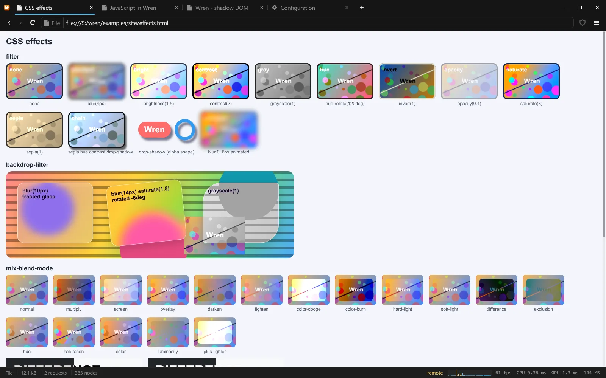
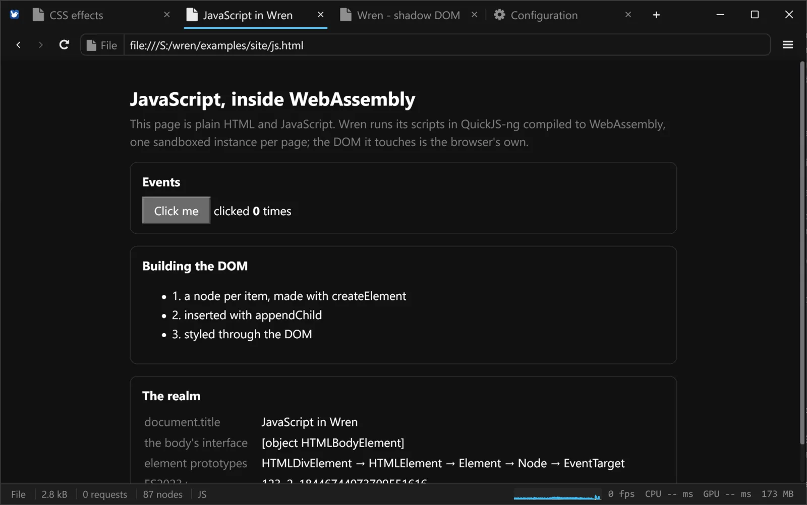
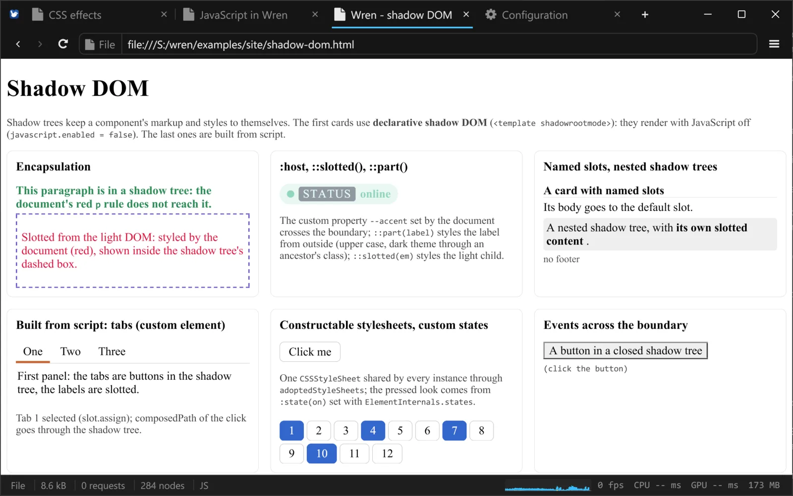
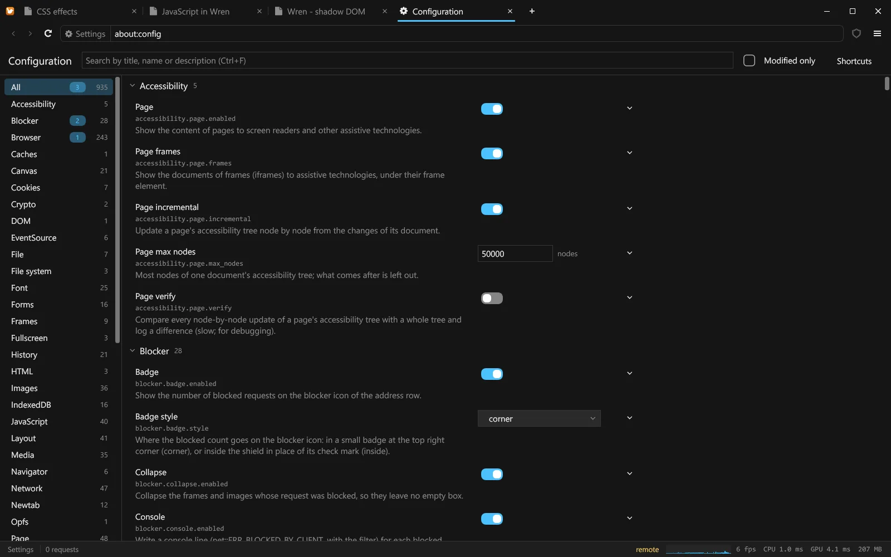
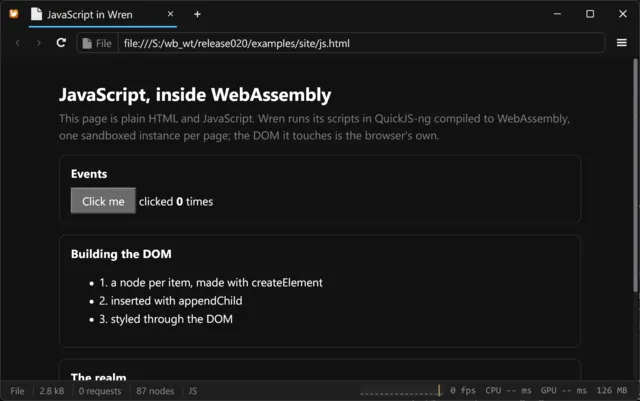
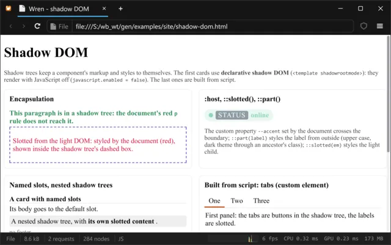
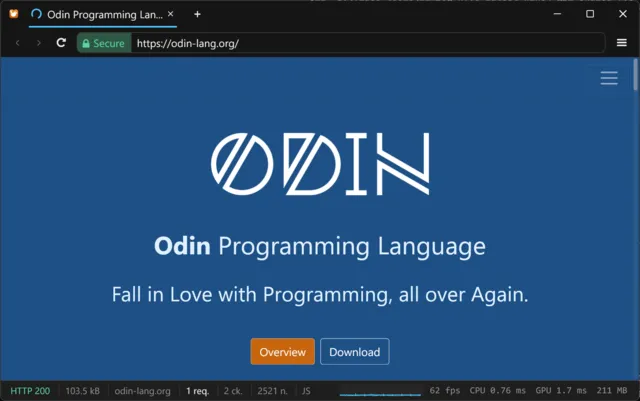
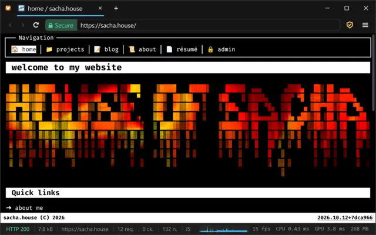
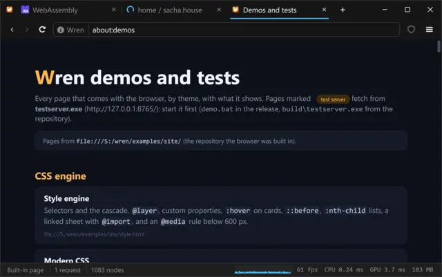
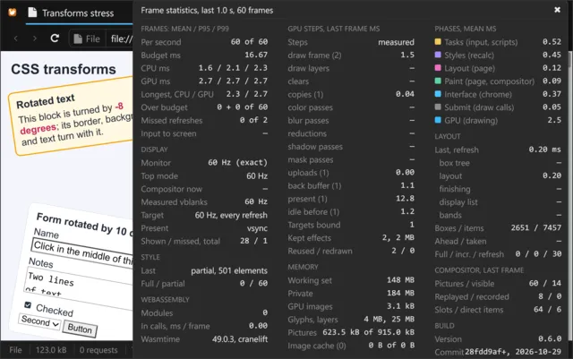

Wren
A browser where WebAssembly runs everything, JavaScript included
Version 0.3.0, an early preview · Windows x64 · MIT license




Click a tab in the screenshot: each one is a page Wren rendered.
The idea
Every browser today carries a native JavaScript engine, with WebAssembly bolted on next to it. Wren starts at the other end.
JavaScript
A whole engine in a sandbox
QuickJS-ng compiled to WebAssembly: one instance per page and per worker, a capped heap, scripts stopped when they run too long. A page's JavaScript starts in about 0.5 ms.
Or none at all
A page can be one .wasm file
Name the module with <script type="application/wasm"> and call the browser directly:
25 modules, 672 functions, described once in
Web IDL, about 7 ns a call.
Under it
New code, not a wrapper
Style, layout, painting, the DOM, Fetch and the shell are written in Odin and drawn on Direct3D 11. No Chromium underneath.
Features
Six things Wren does that most browsers don't. Every number here was measured on the development machine; the long list is in the changelog.
The web platform, from its specifications
The JavaScript bindings are generated from the official
Web IDL: DOM, CSSOM, events, observers, custom elements,
fetch, streams, storage, WebSocket, workers. 2,630 of 4,991 members
are implemented; the others are absent, so feature detection sees the truth.
Nothing escapes the sandbox
Every call into a module, JavaScript included, has a deadline and a capped heap. A loop that never returns is interrupted; a crashed engine loses the page's scripts, not the browser.
Modern CSS
Cascade layers, @property, container queries, CSS Color 4, flexbox, Grid with subgrid, transforms, animations and transitions.
Effects on the GPU
filter,
backdrop-filter, 18 blend modes,
clip-path, masks, background-clip: text, and gradients interpolated in sRGB,
Oklab, Oklch and Lab.
At the display's refresh rate
Wheel scrolling a page of 10,000 paragraphs: 1.4 ms CPU and 2.3 ms GPU at the 99th percentile, under the 5.56 ms of a 180 Hz screen. The start page is drawn 0.3 s after launch.
A native window
Tabs in the title bar with Snap Layouts, downloads, local folders, light and dark mode, find
in page, zoom, view-source: and a keyboard path through all of it.
Screenshots
Unedited captures of Wren on Windows 11.

Plain JavaScript, run by QuickJS-ng compiled to WebAssembly. 
Shadow DOM: declarative roots, slots, ::part(), a custom element.
odin-lang.org over HTTPS, its scripts running. 
sacha.house: Tailwind CSS, background-clip: text, a fieldset legend, COLRv1 emoji.
Tabs in the title bar, with favicons; the window keeps Snap Layouts. 
Frame statistics: phases, GPU steps, compositor, display, memory, build.
Status
A young engine, and no pretending otherwise: what works, and what does not, yet.
Works today
- Documents and CSS-heavy sites, within a few percent of Edge pixel for pixel.
- Sites whose scripts add to the page: menus, themes, web components, observers.
- WebAssembly pages with the DOM, events, timers, fetch, WebSocket, workers and storage.
Not yet
- JavaScript is interpreted, without a JIT: script-heavy pages are slow.
- About half of the web platform; no
<canvas>, no<video>. - Windows only.
Architecture
A page owns its DOM, its WebAssembly instances (its JavaScript realm is one of them), its requests and its timers. Close a tab and all of it goes, in order. Below: the engine, then Windows.
Support Wren
Every version is free during the beta. The supporter licence is one payment of 29 €, no subscription - and it unlocks nothing, on purpose: it keeps the work going.
License
Wren is free software under the MIT License, and the libraries it links keep their own. Every version is free during the beta; a licence only supports its development.